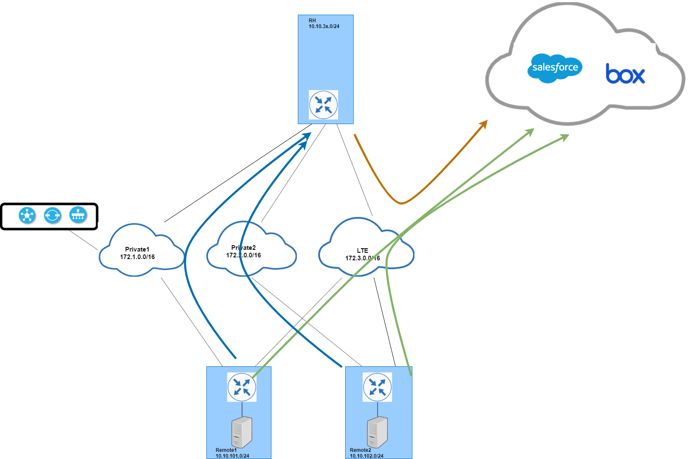

Lab 3: Performance Optimization
In this section, you will help ACME to optimize their SD-WAN fabric. You will perform the following tasks in this lab.
- Add QoS and make sure consistent QoS policies are applied across the SD-WAN fabric.
- Regional hub has higher bandwidth on WAN circuits compare to remote sites. This bandwidth mismatch could potentially cause packet drops on remote sites. Configure the sd-wan fabric to prevent this potential issue.
- Due to the latency sensitive application requirement, a spoke to spoke tunnel is needed between remote sites. Configure the sd-wan fabric to build on-demand tunnel between remote sites.
- Cloud Application (16.16.16.16) requires inspection services on all users. Configure IPSec tunnel to SIG provider for inspection services and configure the sd-wan fabric to route all traffic to this application over a IPSec tunnel.
- ACME wants to reduce the bandwidth consumption on private WAN links. Configure the sd-wan fabric to route public cloud and Internet traffic over local internet access.
- For SaaS application, configure the sd-wan fabric to use either local DIA or RH based on application performance.
Task 1: QoS
Enabling QoS has three main steps: classification, marking and queueing. Queueing policy is configured as Localized policy and applied on interface level. classification and marking can be enabled over Localized policy or over centralized data policy. ACME requires consistent QoS policies across sd-wan fabric, you will use centralized data policy to achieve that.
ACME uses 4-class QoS model with the following policy requirements.
| Class | Applications | DSCP Value | Queueing |
|---|---|---|---|
| REALTIME | rtp,webex,zoom | EF | 30% |
| SIGNALING | rtcp,mgcp,sip | CS3 | 10% |
| CRITICAL | SSH,SNMP,SMB | AF31 | 40% |
| DEFAULT | 0 | 20% |
Step1.1: class map and applications
-
login vManage 198.18.133.200 and access policy configuration from Configuration - Policies
-
Click Custom Options drop down on the top right and select Lists under Localized Policy

- Click Class Map list type on the left and add New Class List. In the pop up window enter REALTIME in Class filed, and select 0 from Queue dropdown.

- After save REALTIME class, add following three classes.
- class: SIGNALING Queue: 1
- class: CRITICAL Queue: 3
- class: DEFAULT Queue: 2

-
Click Custom Options drop down on the top right and select Lists under Centralized Policy

-
Click Application list type on the left and add New Application List. In the application configure window enter REALTIME in Application List Name, and select "RTP, WebEX, Zoom" from Application drop list.

- After same "REALTIME" Application, add following two Applications
- Application List Name: SIGNALING Application: Real Time Control Protocol, Media Gateway Control Protocol, Session Initiation Protocol
- Application List Name: CRITICAL Application: Secure Shell, SImple Network Management Protocol, SMB

Step1.2: Central Data Policy for classification
-
login vManage 198.18.133.200 and access policy configuration from Configuration - Policies
-
Click Custom Options drop down on the top right and select Traffic Policy under Centralized Policy
-
Select Traffic Data and select Create New from Add Policy drop list

- Configure the data policy to match on application list, assign to forwarding class and DSCP value as show below.

- After Save Data Policy, go back to the Centralized Policy configuration and edit central policy LAB_Central_V01

- Click Traffic Rules tab on the top then click Traffic Data and select Import Existing to add QoS data policy Lab_QoS_v01

- Click Policy Application tab on the top then click Traffic Data to assign the qos data policy.
- To have consistent QoS policy for the fabric, We will apply the QoS policy to all sites and all VPNs on service side as below screenshot.

- Click Add and Save Policy Changes then Active the updated central policy.
Step1.3: Local QoS queuing policy
-
login vManage 198.18.133.200 and access policy configuration from Configuration - Policies
-
Click Custom Options drop down on the top right and select forwarding Class/QoS under Localized Policy
-
Select QoS Map and select Add QoS Map to create new queuing policy Lab_QoS_Map_v01
- Click Add Queue to add policy for SIGNALING class as show below.

- Click Add Queue to add policy for CRITICAL class as show below

- Click Add Queue to add policy for DEFAULT class as show below

- The QoS queuing policy will look similar to screenshot below.

- After queuing policy is created, we create localized policy that includes the queueing policy.
Note: To save time, We will only create local policy for remote sites in this lab.
- Click Localized Policy tab and Add Policy
- Click Next move to configure Forwarding Classes/QoS
- Click Add QoS Map drop down and select import existing. Search Lab_QoS_Map_v01 and Import.
- Click next to pass ACL and route policy config. On Policy Overview, give a nme for the local policy and check Application at the bottom from Policy Settings.

Step1.4: Apply QoS queuing policy
Applying QoS queuing policy is two step process, first you need to associate the localized policy to the device template, and next you need reference the queueing policy-map on transport interface.
- Access template configuration from Configuration - Templates
- Under Device template tab, locate template Lab_R1_V01 and select Edit
- Associate Lab_Remote_VPN1_V01 localized policy to the template as show below

- Click Update to push the new localized policy configuration.
- Repeat the above steps for template Lab_R2_V01
Now you have the localized policy associated with device template for both remotes. Next you need reference the queueing policy on transport interfaces.
- Access template configuration from Configuration - Templates
- Under Feature template tab, locate template Lab_Remote_VPN0_Private1_v01 and select Edit
- Under ACL/QOS section, hardcode Lab_QoS_Map_v01 for QoS Map field.

- click update to push configuration change.
- Repeat the above steps to update Lab_Remote_VPN0_Private2_V01 and Lab_Remote_VPN0_LTE_V01 feature templates.
- After queuing policy is applied on both transport interfaces, you can verify the QoS policy from CLI using command
show policy-map interface
R2-WE1#show policy-map interface GigabitEthernet 2
GigabitEthernet2
Service-policy output: Lab_QoS_Map_v01
queue stats for all priority classes:
Queueing
priority level 1
queue limit 512 packets
(queue depth/total drops/no-buffer drops) 0/0/0
(pkts output/bytes output) 22647/6060238
Class-map: Queue0 (match-any)
22647 packets, 6060238 bytes
30 second offered rate 15000 bps, drop rate 0000 bps
Match: qos-group 0
police:
rate 30 %
rate 300000000 bps, burst 9375000 bytes
conformed 22647 packets, 6060238 bytes; actions:
transmit
exceeded 0 packets, 0 bytes; actions:
drop
conformed 15000 bps, exceeded 0000 bps
Priority: Strict, b/w exceed drops: 0
Priority Level: 1
Class-map: Queue1 (match-any)
0 packets, 0 bytes
30 second offered rate 0000 bps, drop rate 0000 bps
Match: qos-group 1
Queueing
queue limit 1041 packets
(queue depth/total drops/no-buffer drops) 0/0/0
(pkts output/bytes output) 0/0
bandwidth remaining ratio 10
Class-map: Queue3 (match-any)
10268 packets, 1197729 bytes
30 second offered rate 0000 bps, drop rate 0000 bps
Match: qos-group 3
Queueing
queue limit 1041 packets
(queue depth/total drops/no-buffer drops) 0/0/0
(pkts output/bytes output) 10268/1197729
bandwidth remaining ratio 40
Class-map: class-default (match-any)
15 packets, 1609 bytes
30 second offered rate 0000 bps, drop rate 0000 bps
Match: any
Queueing
queue limit 1041 packets
(queue depth/total drops/no-buffer drops) 0/0/0
(pkts output/bytes output) 15/1609
bandwidth remaining ratio 20
Exp-weight-constant: 9 (1/512)
Mean queue depth: 0 packets
class Transmitted Random drop Tail drop Minimum Maximum Mark
pkts/bytes pkts/bytes pkts/bytes thresh thresh prob
0 1/349 0/0 0/0 260 520 1/10
1 0/0 0/0 0/0 292 520 1/10
2 0/0 0/0 0/0 325 520 1/10
3 0/0 0/0 0/0 357 520 1/10
4 0/0 0/0 0/0 390 520 1/10
5 0/0 0/0 0/0 422 520 1/10
6 14/1260 0/0 0/0 455 520 1/10
7 0/0 0/0 0/0 487 520 1/10
````
### Task 2: per-tunnel QoS
In this section, you will configure the RH WAN edge router (**RH-WE1**) to shape tunnel traffic to each remote. This per-tunnel QoS will make sure RH cannot send excessive traffic to remotes and overrun it.
#### Step2.1: Configure QoS policy on RH
- In taks 1, you have configured QoS policy on remote sites. Follow the same steps to configure QoS policy on RH **RH-WE1**.
- login vManage **198.18.133.200** and access policy configuration from **Configuration - Policies - Localized Policy**
- Copy polocy **LAB_Remote_Local_v01** and name new policy **LAB_RH_Local_v01**.
- Access template configuration from **Configuration - Templates**
- Locate device template **Lab_RH_V01** and attach localized policy **LAB_RH_Local_v01** to the device template.
- Update following feature templates
+ **Lab_RH_VPN0_Private1_v01**
+ **Lab_RH_VPN0_Private2_V01**
+ **Lab_RH_VPN0_LTE_V01**
- Under ACL/QOS section, hardcode **Lab_QoS_Map_v01** for QoS Map field.
#### Step2.2: Configure Hub role on RH
- Access template configuration from **Configuration - Templates**
- Under **Feature** template tab, locate template **Lab_RH_VPN0_Private1_v01** and select **Edit**
- In **TUNNEL** section, configure the following
- select **On** for **Per-tunnel QoS** to enable per-tunnel QoS
- select **On** for **Per-tunnel QoS Aggregator** to set this as hub tunnel
- Configure **Tunnel Bandwidth Percent** to **80** to set maximum bandwidth usage for overlay traffic

- Locate feature template **Lab_RH_VPN0_Private2_V01**, and select **Edit**
- In **TUNNEL** section, configure the following
- select **On** for **Per-tunnel QoS** to enable per-tunnel QoS
- select **On** for **Per-tunnel QoS Aggregator** to set this as hub tunnel
- Configure **Tunnel Bandwidth Percent** to **80** to set maximum bandwidth usage for overlay traffic
#### Step2.3: Configure Spoke role on Remotes
- Access template configuration from **Configuration - Templates**
- Under **Feature** template tab, locate template **Lab_Remote_VPN0_Private1_v01** and select **Edit**
- In **TUNNEL** section, configure **On** for **Per-tunnel QoS** to enable per-tunnel QoS. Since this is spoke, we will leave **Per-tunnel QoS Aggregator** off.

- To configure a device as spoke role, you will also need to configure the downstream bandwidth.
- specify the downstream bandwidth to 10Mbps for remote1

- locate template **Lab_Remote_VPN0_Private2_v01** and select **Edit**
- In **TUNNEL** section, configure **On** for **Per-tunnel QoS** to enable per-tunnel QoS. Since this is spoke, we will leave **Per-tunnel QoS Aggregator** off.

- To configure a device as spoke role, you will also need to configure the downstream bandwidth.
- specify the downstream bandwidth to 10Mbps for remote1

#### Step2.4: Verify per-tunnel QOS
To verify per-tunnel QoS is working as configured. SSH into **RH-WE1** and run the commands as show below
RH-WE1#show platform software sdwan qos policy ============ Session QoS Policy Database ============ policy bandwidth remaining-ratio template SDWANPolicy4210704 10000000 1 Lab_QoS_Map_v01 SDWANPolicy4210705 20000000 2 Lab_QoS_Map_v01
RH-WE1#show platform software sdwan qos target ============ Session QoS Target Database ============ src-addr dst-addr sport dport proto remote-tloc dummy-intf tunnel policy bandwidth 172.1.7.2 172.1.8.2 12346 12346 IPSEC 1.1.100.1 SDWANSession4210704 Tunnel1 SDWANPolicy4210704 10000 172.2.6.2 172.2.7.2 12346 12346 IPSEC 1.1.102.1 SDWANSession4210705 Tunnel2 SDWANPolicy4210705 20000
### Task 3: On-demand Tunnel
Hub and Spoke topology can reduce the CPU and memory usage on WAN Edge, but sometime a spoke to spoke tunnel is needed. Dynamic on-demand tunnel offers the benefits of having direct spoke to spoke tunnel while keep the low CPU and memory usage on WAN Edge.
To improve latency of traffic between remotes, configure dynamic on-demand tunnel between remote1 and remote2.
#### Step3.1: Modify central control policy
In Lab1 you have created hub and spoke topology for both remote sites. In order to create dynamic on-demand tunnel between remotes, first you need modify the topology policy to include a **tloc-action backup** action.
- login vManage **198.18.133.200** and access policy configuration from **Configuration - Policies**
- Click **Custom Options** drop down on the top right and select **Topology** under **Centralized Policy**
- Highlight topology policy **LAB_Topo_RS1** and select **Edit**
- Click **TLOC** from **Sequence Type** on the left
- Click **Sequence Rule** to add a new rule; configure the rule to match on site list **All-Remotes**, Actions **Accept**. **Save Match And Actions** to add this new rule.

- Click **Route** from **Sequence Type** on the left

- Click **Sequence Rule** to add a new rule; configure the rule to match on site list **All-Remotes**, Actions TLOC list **RH-Tlocs** and TLOC Action **Backup**.

- After **Save Match and And Actions**, drag and drop the newly created rule to seq # 1.

- Follow the same steps to modify topology policy **LAB_Topo_RS2**.
#### Step3.2: Configure On-demand Tunnel
Enable Traffic Engineering service on RH to allow RH becomes backup path.
- Access template configuration from **Configuration - Templates**
- Under **Feature** template tab, locate template **Lab_RH_VPN0_v01** and select **Edit**
- In **SERVICE** section, add **TE** from service type drop down, and add it to this feature template.

- Update and push configure change.
On remote sites, R1-WE1 and R2-WE2, enable on-demand on system template.
- Under **Feature** template tab, locate template **Lab_System_V01** and select **Copy**
- Name new system template **Lab_Remote_System_V01**
- Edit **Lab_Remote_System_V01** to enable **On-demand Tunnel**

- locate device template **Lab_R1_V01** and change system template to **Lab_Remote_System_V01**

update and push configuration change.
- locate device template **Lab_R2_V01** and change system template to **Lab_Remote_System_V01**. update and push configuration change.
#### Step3.3: Verify On-demand Tunnel between remotes
You can verify the dynamic tunnel between remotes from vManage.
- login vManage **198.18.133.200** and access **Monitor - Network**
- select WAN-Edge **R1-WE1**

- Click **Real Time** and type in **on demand local** in **Device Options** filed

- The output shows local on demand tunnel is enabled and status is active.

- type in **on demand remote** in **Device Options** filed
- the output shows remote on demand tunnel to remote2 **1.1.102.1** is enabled and tunnel status is **inactive**

- Dynamic on demand tunnel is triggered by traffic between the local and remote sites. That's why you see status of on demand remote is inactive. Let's generate bi-directional traffic between remote1 and remote2 to trigger on demand tunnel.
- ssh into **R1-VM1**, and type `ssh 10.10.102.10` to login **R2-VM2** with credential **viptela/viptela**
Welcome to Ubuntu 16.04.2 LTS (GNU/Linux 4.8.0-36-generic x86_64)
- Documentation: https://help.ubuntu.com
- Management: https://landscape.canonical.com
-
Support: https://ubuntu.com/advantage 689 packages can be updated. 475 updates are security updates. Last login: Mon Feb 8 09:22:21 2021 from 10.16.22.163 viptela@remote1_ubuntu:~$ ssh 10.10.102.10 viptela@10.10.102.10's password: Welcome to Ubuntu 16.04.2 LTS (GNU/Linux 4.8.0-36-generic x86_64)
-
Documentation: https://help.ubuntu.com
- Management: https://landscape.canonical.com
- Support: https://ubuntu.com/advantage 711 packages can be updated. 521 updates are security updates. Last login: Mon Feb 8 09:25:00 2021 from 10.10.101.10 viptela@remote2_ubuntu:~$
- Go back to **vManage - Monitor - Network - R1-WE1 - Real time** and type in **on demand remote** in **Device Options** filed.
- verify the tunnel status for on demand tunnel to remote2 **1.1.102.1** changes **active**

### Task 4: IPsec tunnel to SIG
Inspection service is required for traffic to cloud application with IP **16.16.16.16**. Configure remote1 and remote2 to build an IPSec tunnel to SIG provider. Route all traffic to **16.16.16.16** for inspection.
#### Step4.1 : Manual IPSec tunnel to SIG
Before configuring the IPSec tunnel, verify the connectivity to Cloud application at **16.16.16.16** from remote ubuntu hosts. It is expected to see the application is not reachable.
viptela@remote1_ubuntu:~$ ping 16.16.16.16 PING 16.16.16.16 (16.16.16.16) 56(84) bytes of data.
Configure IPSec tunnel on remote1 and remote2 to match the pre-configured tunnel at SIG provider.
|site|tunnel IP|tunnel source|tunnel destination|IKE version|pre-share key|
|---|---|---|---|---|---|
|Remote1|172.4.101.1/24|GigabitEthernet2|172.3.2.2|IKE v1|cisco123|
|Remote2|172.4.102.1/24|GigabitEthernet2|172.3.2.2|IKE v1|cisco123|
**Isakmp policy**
encryption algorithm: AES - Advanced Encryption Standard (256 bit keys). hash algorithm: Secure Hash Standard authentication method: Pre-Shared Key Diffie-Hellman group: #16 (4096 bit) lifetime: 14400 seconds, no volume limit
**IPSec policy**
Security association lifetime:3600 seconds PFS (Y/N): Y DH group: group16 Mixed-mode : Disabled Transform sets=esp-aes esp-sha-hmac Antireplay window size = 512
- login vManage **198.18.133.200** and access template configuration from **Configuration - Templates - Feature**
- Add new IPsec interface feature template as show below

- Configure the template with following fields and leave other fields as default value
|filed name|value|
|---|---|
|Template Name|Lab_IPsec_Int_V01|
|Description|Lab_IPsec_Int_V01|
|Shutdown|No|
|Interface Name|ipsec1|
|IPv4 address|ipsec_tun_ip|
|source|Interface|
|IPsec Source Interface|GigabitEthernet2|
|IPsec Destination IP Address|172.3.2.2|
|Preshared Key|cisco123|

- Add tunnel feature template **Lab_IPsec_Int_V01** to device template **Lab_R1_V01** and **Lab_R2_V01**
- Locate device template **Lab_R1_V01** click Edit
- Add **Lab_IPsec_Int_V01** under VPN0

- click save to update and filed in **172.4.101.1/24** for tunnel IP Address

- Locate device template **Lab_R2_V01** click Edit
- Add **Lab_IPsec_Int_V01** under VPN0
- click save to update and filed in **172.4.102.1/24** for tunnel IP Address

- The ipsec tunnel will be **UP** on both remote sites. You can verify the tunnel status from **show ip interface brief**
R2-WE1#sh ip int b Interface IP-Address OK? Method Status Protocol GigabitEthernet1 172.2.7.2 YES other up up GigabitEthernet2 172.3.9.7 YES DHCP up up GigabitEthernet3 unassigned YES other down down GigabitEthernet4 10.10.102.1 YES other up up GigabitEthernet5 unassigned YES other down down GigabitEthernet6 unassigned YES other down down GigabitEthernet7 unassigned YES other down down GigabitEthernet8 192.168.150.19 YES other up up Sdwan-system-intf 1.1.102.1 YES unset up up Loopback65528 192.168.1.1 YES other up up NVI0 unassigned YES unset up up Tunnel1 172.2.7.2 YES TFTP up up Tunnel2 172.3.9.7 YES TFTP up up Tunnel100001 172.4.102.1 YES other up up R2-WE1#
R1-WE1#sh ip int b Interface IP-Address OK? Method Status Protocol GigabitEthernet1 172.1.8.2 YES other up up GigabitEthernet2 172.3.8.7 YES DHCP up up GigabitEthernet3 10.10.101.1 YES other up up GigabitEthernet4 unassigned YES other down down GigabitEthernet5 unassigned YES other down down GigabitEthernet6 unassigned YES other down down GigabitEthernet7 unassigned YES other down down GigabitEthernet8 192.168.150.16 YES other up up Sdwan-system-intf 1.1.100.1 YES unset up up Loopback65528 192.168.1.1 YES other up up NVI0 unassigned YES unset up up Tunnel1 172.1.8.2 YES TFTP up up Tunnel2 172.3.8.7 YES TFTP up up Tunnel100001 172.4.101.1 YES other up up R1-WE1# ```` - Next you need to route all traffic to cloud application 16.16.16.16 to the tunnel. - locate feature template Lab_Remote_VPN1_V01 and edit - In IPSEC ROUTE section, add New IPSEC Route with prefix 16.16.16.16/32 interface ipsec1

- click update to push configure change to both remote sites.
Step4.2 : verify SIG tunnel
-
VNC login R1-VM1 and R2-VM1 with credential viptela
-
verify that you can ping 16.16.16.16 from the VM

- now try access 16.16.16.16 from browser. You should see this login page

Task 5: DIA
There are two options to enable DIA. - option 1: NAT DIA Route
In this option, a NAT route is configured under service VPN. You can direct local internet traffic from service VPN to transport VPN. - option 2: Centralized data policy
In this option, a centralized policy is applied to service side traffic based on ip prefixes, a match will redirect to transport VPN. Traffic that doesnt match the policy will stay in service VPN and route over IPSec tunnel.
In this task, you are going to configure DIA on remote sites using option 2.
Task 6: CoR for SaaS
Instead of using the DIA exit point as configured in previous task, for SaaS application box and salesforce, ACME wants to use the most optimal path. Configure the remote sites to dynamically chose local DIA or regional hub as exit point for box and salesforce based on application performance. 
Step6.1 Enable Cloud OnRamp for SaaS
- login vManage 198.18.133.200 and access Administration - Settings
- Edit Cloud onRamp for SaaS and check Enabled

Step6.2 Add SaaS application
- Access CoR SaaS configuration via Configuration - Cloud onRamp for SaaS
-
From Manage Cloud OnRamp for SaaS dropdown, select Applications and Policy

-
Select Box and Salesforce from the application list; Select Enabled for Monitoring dropdown list; Enter 1 for VPN; Select Enabled for Policy/Cloud SLA dropdown list.
 - Cloud OnRamp for SaaS uses existing AAR policy, we will keep the system created policy for SaaS. Click Save Policy to proceed the policy update.
- Cloud OnRamp for SaaS uses existing AAR policy, we will keep the system created policy for SaaS. Click Save Policy to proceed the policy update.

Step6.3 Add sites
You are going to configure remote sites as DIA site, and Regional hub as gateway site. Remote sites will monitor the QoE score for local DIA via LTE transport, and also the QoE score for gateway site.
- Access CoR SaaS configuration via Configuration - Cloud onRamp for SaaS
- Click Manage Cloud OnRamp for SaaS dropdown list on the upper left, and select Gateway
 - Click Attach Gateways, select RH-WE1 and move it to selected Sites. Click Add interfaces to selected sites.
- Click Attach Gateways, select RH-WE1 and move it to selected Sites. Click Add interfaces to selected sites.
 - In the pop up window, under Interface field select interface GigabitEthernet4 from the list. This will allow gateway site sends
- In the pop up window, under Interface field select interface GigabitEthernet4 from the list. This will allow gateway site sends
 - Click Manage Cloud OnRamp for SaaS dropdown list on the upper left, and select DIA Sites
- Click Manage Cloud OnRamp for SaaS dropdown list on the upper left, and select DIA Sites
 - select Attach DIA Sites, select R1-WE1 and R2-WE1 and move it to selected Sites.
- select Attach DIA Sites, select R1-WE1 and R2-WE1 and move it to selected Sites.

Step6.4 Verify CoR SaaS
Click Manage Cloud OnRamp for SaaS to verify QoE status, DIA status, exit interface on each WAN Edge for SaaS application.

Note: Your output may not match the screenshot on the vQoE score and DIA Status. This is expected.
- screenshot above shows both remote sites are using local DIA as exit point for box and Salesfoce SaaS application.
- This lab doesn't have traffic impairment tool, we can't increase remote transport's latency or drop to trigger SaaS changes exit point. But if you keep checking the SaaS status, you will notice the vQoE score changes and exit interface changes.